Префектура Нагасаки · Нагасаки · сады
Сад Михара: цветы на склоне Нагасаки от садового дизайнера Кадзуюки Исихары
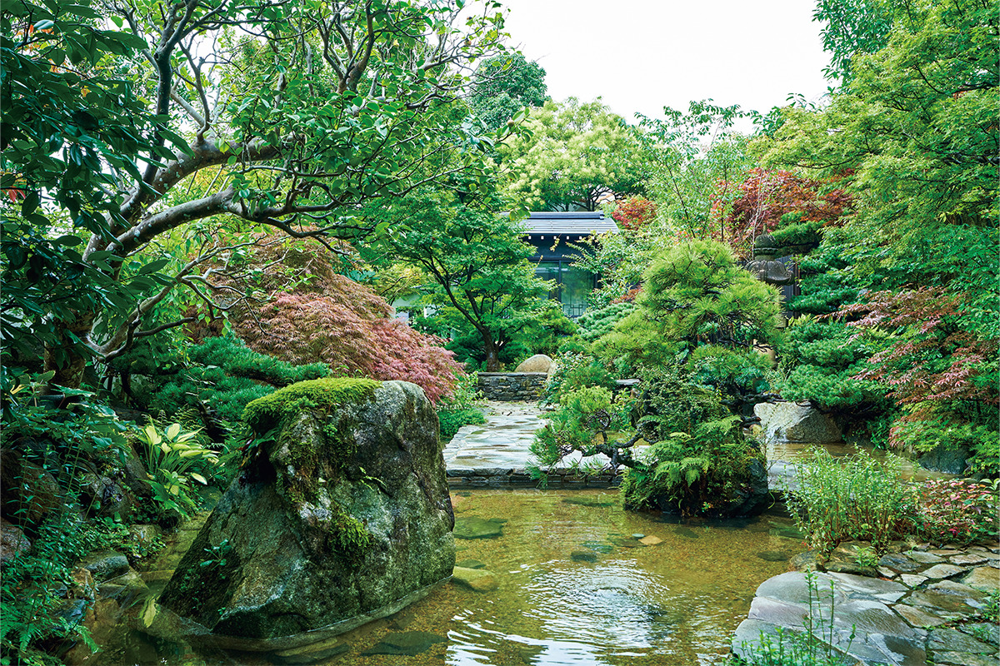
Сад Михара открылся в 2020 году на склоне горы над Нагасаки. Его автор, садовый дизайнер Кадзуюки Исихара, вырос в этих местах и решил вернуть родному району цветы и зелень.
Место
Район тайных христиан
Нагасаки веками был воротами Японии в мир. Здесь смешались голландская, китайская и японская культуры, и их следы до сих пор видны в местной кухне, пейзаже и обычаях. Один из символов этой истории это объекты наследия тайных христиан (сэмпуку кириситан) в Нагасаки и Амакусе, внесённые в список всемирного наследия ЮНЕСКО.
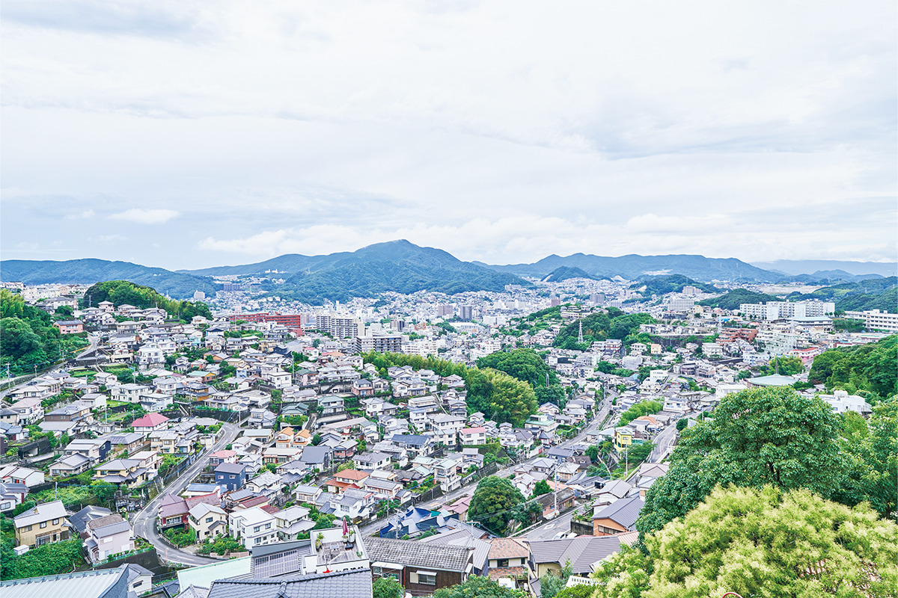
Михара лежит в центре города. В XVII–XIX веках, когда христианство в Японии было под запретом, сюда переселялись верующие, тайно хранившие свою веру. Атомная бомбардировка 1945 года и сильное наводнение 1982 года надолго подорвали жизнь района, но жители держались вместе, и Михара снова стала спокойным жилым кварталом.
Автор
Садовник с золотыми медалями
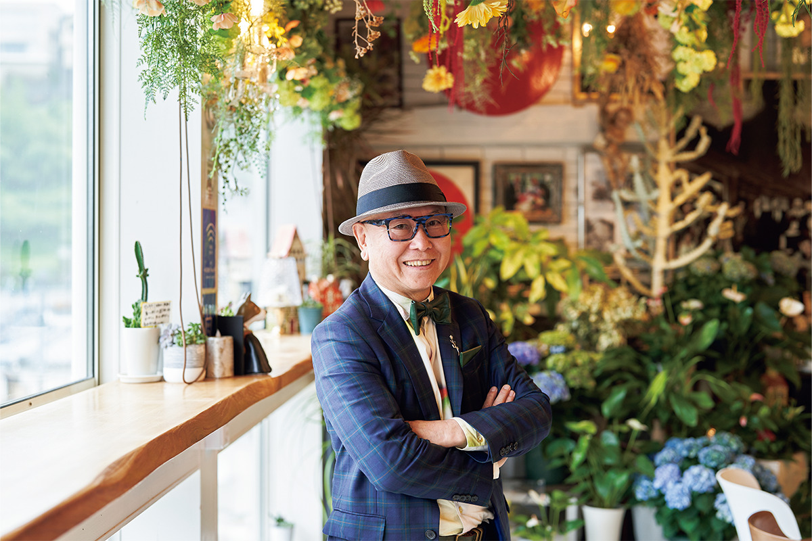
«До 1960-х годов природы здесь было куда больше: в речках плавали креветки, над рисовыми полями летали светлячки. Я хотел, чтобы район снова ожил благодаря цветам и зелени, как в Михаре моего детства»
Кадзуюки Исихара
Исихара начинал в школе икэбаны Икэнобо в Киото, потом продавал цветы прямо на улице и взялся за устройство садов. С 2006 по 2023 год он двенадцать раз получил золотую медаль Челсийской выставки цветов. Сегодня заказы на сады приходят ему и из Японии, и из-за рубежа.
Сад
Цветы, которые видно издалека
Главная особенность сада Михара в том, что он устроен на склоне горы. Нагасаки весь стоит на холмах, и Исихара решил сделать это преимуществом.
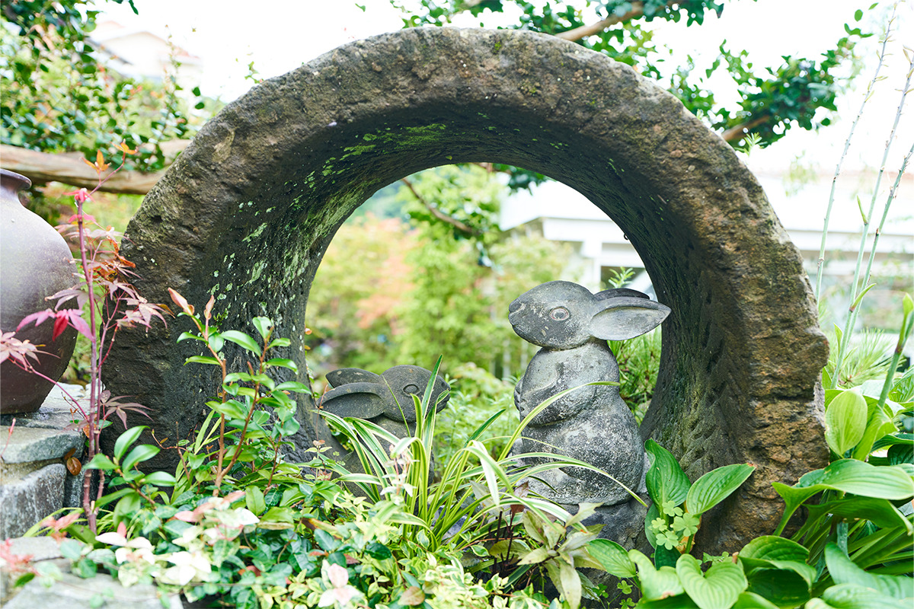
«На ровной земле дальние цветы почти не видны. А на склоне, какие здесь повсюду, можно показать сразу много цветов. И раз сад стоит высоко, пусть красивый город внизу тоже станет его частью»
Кадзуюки Исихара
Сад делится на несколько частей: европейский сад, японский сад, площадку с пейзажными бонсай и другие. Растения пересаживают по сезонам, и всего здесь несколько сотен видов цветов и других растений.
«Чувствовать смену времён года умеют именно японцы. Лепестки сакуры, упавшие на воду, цветы в ночной росе. Хочется, чтобы и эту красоту в саду замечали»
Кадзуюки Исихара
Как будто в подтверждение его слов, в японском саду раз в час поднимается туман, похожий на море облаков.
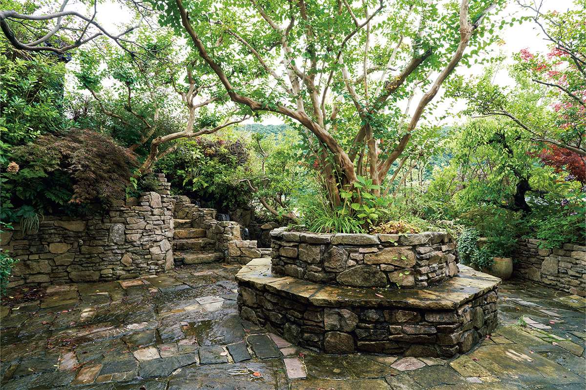
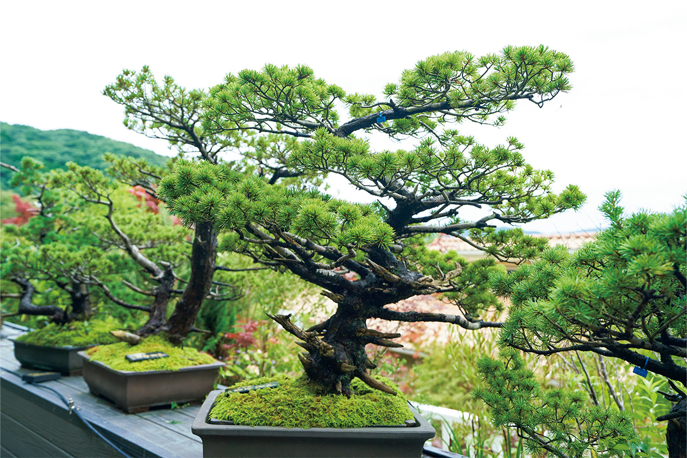
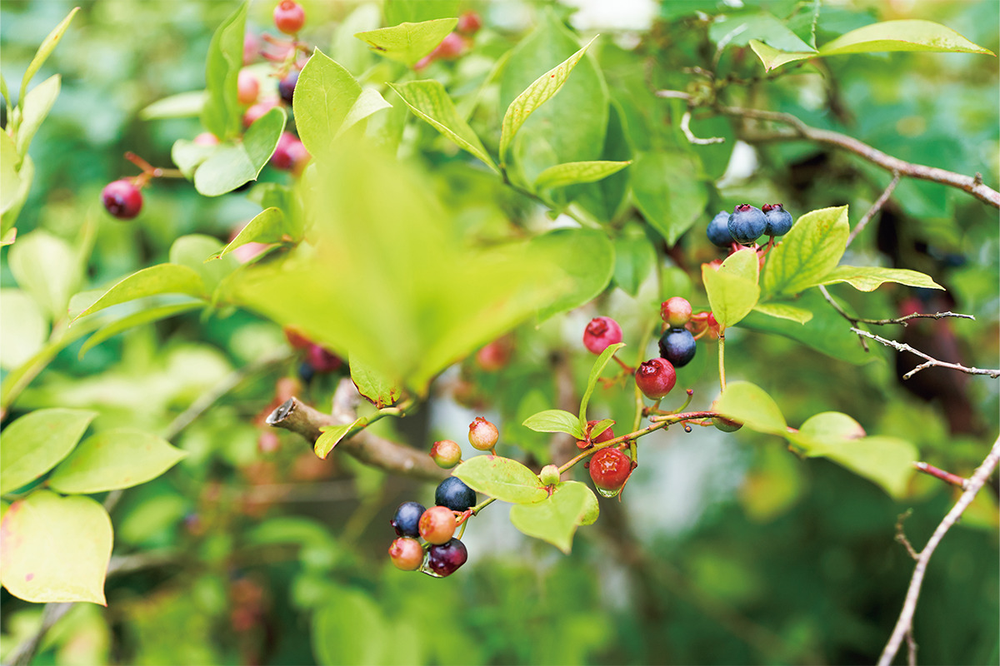
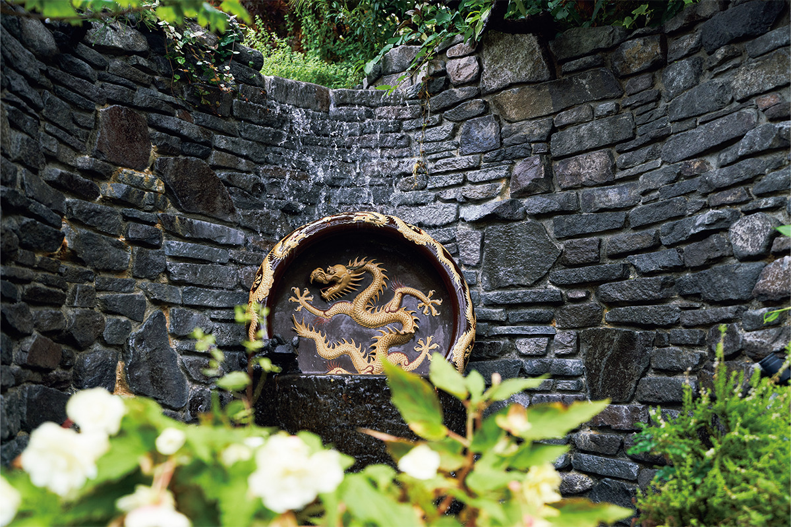
Кафе
Обед в цветах
На территории есть кафе, художественная галерея и лавка. В кафе MIHARA DINING Giverny рекомендуем обед: салат из пятнадцати с лишним видов овощей и трав, пицца и травяной чай. В сезон в блюда идут овощи и травы, выращенные прямо в саду.
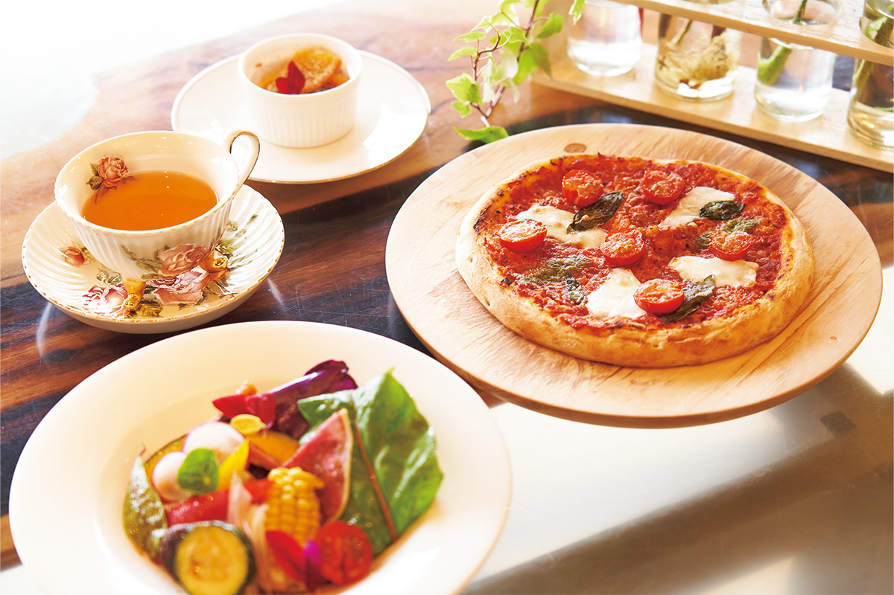
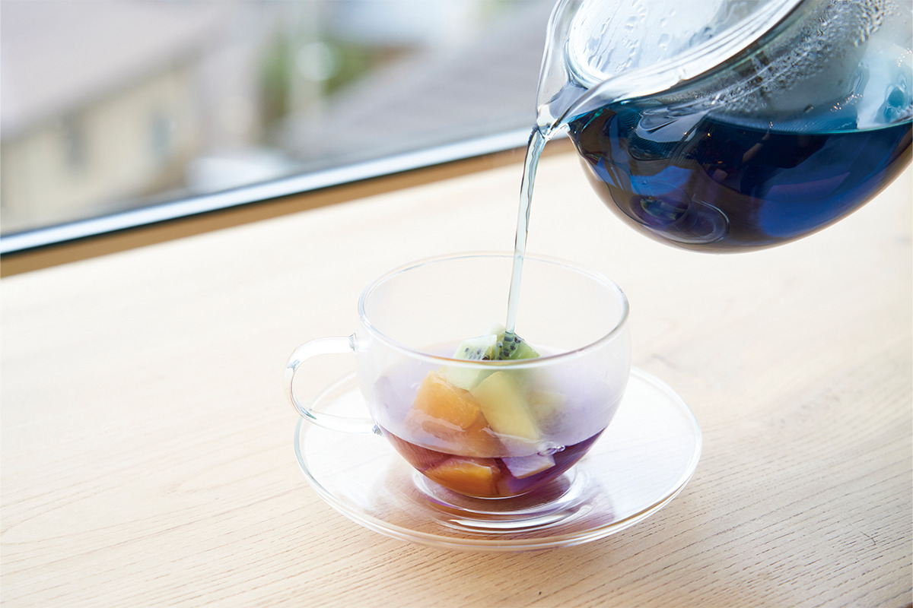
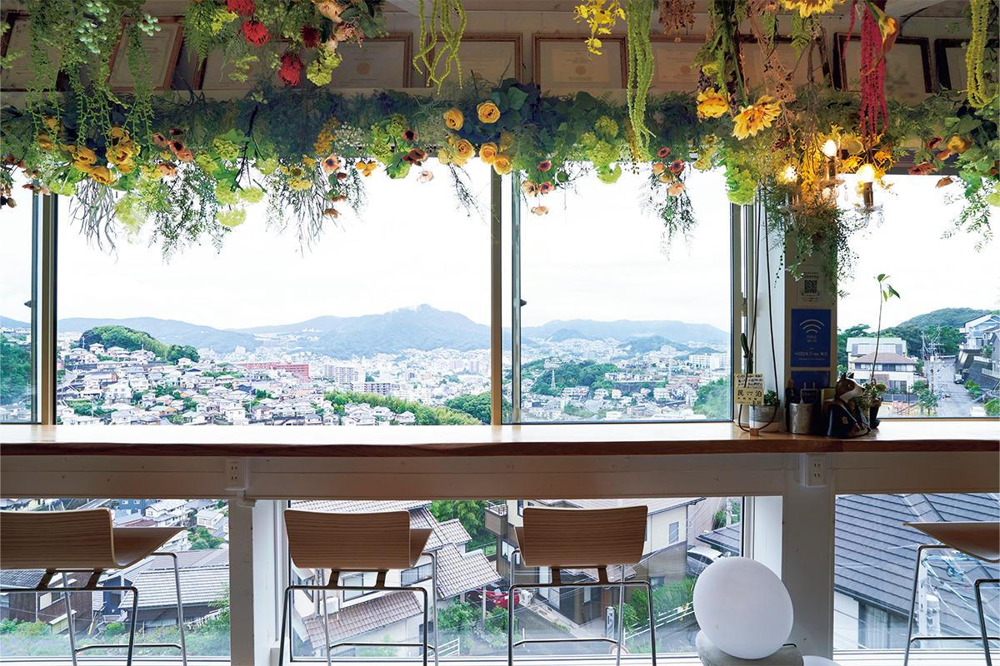
Ночлег
Гостевой дом в цветах
В июне 2024 года в саду появился гостевой дом «Мидория», а на октябрь того же года было запланировано открытие розария. Исихара хочет, чтобы со временем сад стал маленьким городом, где каждый приезд открывает что-то новое.
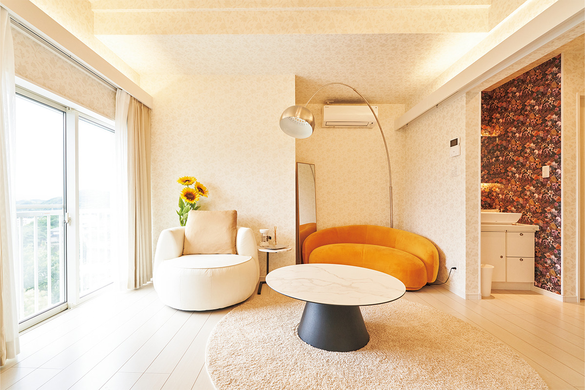
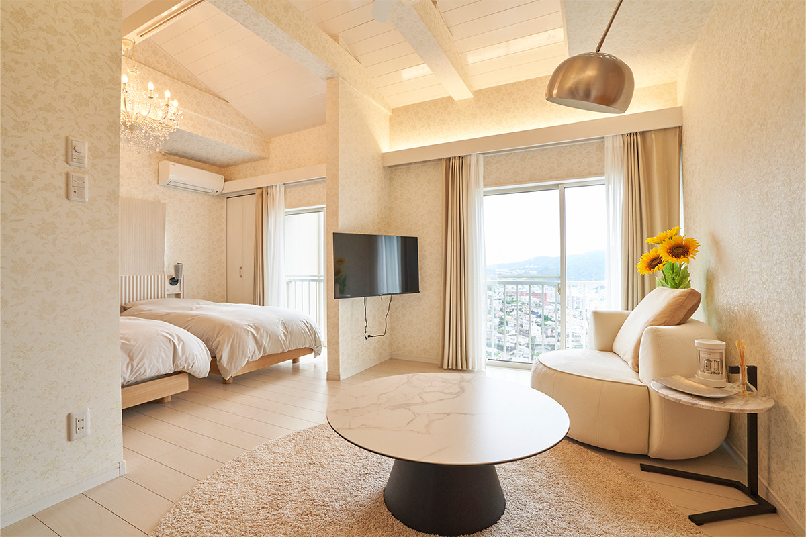
Сад Михара
- Адрес
- префектура Нагасаки, Нагасаки, Михара, 2-26-11
- Телефон
- +81 95-841-8066
- Часы работы
- 10:00–20:00
- Выходные
- без выходных
- Цены / Вход
- бесплатно
- Сайт
- miharagarden.com
Фото: Сэйтаро Икэда.